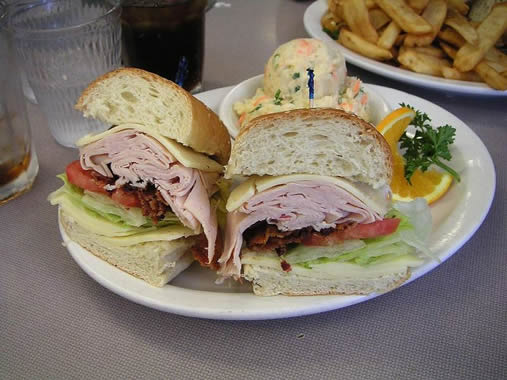

| |
| Carrots |
| Twinkies |
| Avocado |
| Pineapple |
| Turkey Sandwiches |
| Mangoes |
| Pizza |
| Potatoes |
| Other Resources |
No, of course you can't grow a turkey sandwich tree! But can you think of anything you put on a turkey sandwich that might come from a plant?
|

What plant do you think the ingredients for the bread come from?
(Public Domain, Wikimedia user: Jon Sullivan)